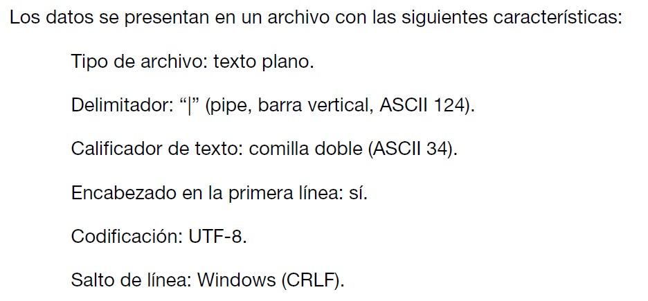
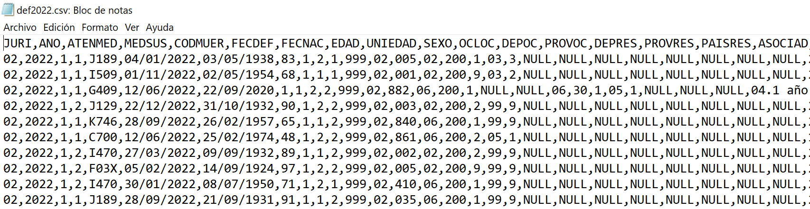

Lectura de un archivo de datos de texto plano
Introducción
Anteriormente dijimos que para leer o importar datos de un archivo de datos con texto plano separado por comas vamos a utilizar alguna de las funciones del paquete readr del tidyverse.
Pero para saber cual es la función adecuada y para adaptar sus argumentos correctamente vamos a necesitar conocer la configuración del archivo de datos.
En este paso a paso, mostraremos las etapas a ejecutar ante una situación de lectura.
En primer lugar, es deseable que conozcamos previamente los archivos con los cuales trabajamos, o bien si son archivos de datos que se reciben de alguna fuente externa vengan acompañados de un diccionario de datos con especificaciones técnicas del propio archivo como de sus variables.
Un ejemplo de esto es el detalle técnico de la tabla de datos que figura en el documento usuario de la Encuesta Nacional de Factores de Riesgo que vemos debajo:
Esta información nos dice que el archivo es de texto plano, utiliza como delimitador de columna a la barra vertical, que la primera línea lleva los nombres de las variables y que la codificación (encoding) de los caracteres tiene el estándar UTF-8.
En función de estos datos podríamos componer nuestra lectura de la siguiente forma:
enfr <- read_delim(file = "ENFR2013_base_usuario.txt",
delim = "|",
locale = locale(encoding = "UTF-8"))Aunque es el estándar predeterminado, completamos el argumento del encoding a propósito para mostrar como se vincula cada parte de la función con la información del archivo de datos.
Si no llegasemos a disponer de esta información es muy posible que debamos investigar el archivo que deseamos importar para saber sus características.
En este documento utilizaremos el archivo def2022.csv con las defunciones del año 2022 producido por la DEIS.
Separador o delimitador de columnas
La primera cosa que podemos hacer con un archivo de texto plano es abrirlo con un software tipo block de notas o con el mismo RStudio para saber cual es el caracter que utiliza como separador de columnas.
Cuando el archivo tiene extensión csv generalmente el separador puede ser coma o punto y coma. Pero recién vimos que la extensión puede ser txt y el separador, alguno de los caracteres habituales (espacio, tabulación, etc).
Desde RStudio, cuando se pulsa el botón izquierdo del mouse sobre el archivo de datos que aparece en el panel Files, se abre una ventana emergente que nos ofrece la posibilidad de visualizarlo en el editor (“View File”). Si el archivo es muy pesado (mayor a 5 Mb) RStudio nos avisará que no lo puede hacer porque excede su capacidad, entonces deberemos hacerlo desde un programa similar al Block de Notas de Windows que trabaja con texto plano.
Veríamos algo así:

Podemos identificar claramente que el caracter que se repite como delimitador es la coma (,). Si hubiese datos numéricos con decimales, también es importante identificar cual es el separador de decimales (en los casos de delimitadores de columna con coma se utiliza el punto para los decimales).
También se puede advertir que la primera línea corresponde a los nombres de las columnas (variables) de nuestra tabla de datos.
Con esta información seleccionaremos como función de lectura a read_csv() que tiene estos valores de separadores como predeterminados.
Encoding
Para conocer cual es la codificación del archivo podemos usar una función del paquete readr, llamada guess_encoding().
library(tidyverse)
guess_encoding("datos/def2022.csv")# A tibble: 1 × 2
encoding confidence
<chr> <dbl>
1 ISO-8859-1 0.52El resultado nos informa del estándar ISO-8859-1 con una confianza del 52 %. Existen muchos estandares como posibilidad en el mundo informático, aunque el predeterminado de RStudio es el UTF-8.
A partir de tener esta información podemos configurar el argumento necesario para hacer una lectura correcta de los caracteres especiales que puede tener el archivo.
def2022 <- read_csv("datos/def2022.csv",
locale = locale(encoding = "ISO-8859-1"))Rows: 397115 Columns: 28
── Column specification ────────────────────────────────────────────────────────
Delimiter: ","
chr (20): JURI, MEDSUS, CODMUER, FECDEF, FECNAC, DEPOC, PROVOC, DEPRES, PROV...
dbl (8): ANO, ATENMED, EDAD, UNIEDAD, SEXO, OCLOC, PAISRES, ASOCIAD
ℹ Use `spec()` to retrieve the full column specification for this data.
ℹ Specify the column types or set `show_col_types = FALSE` to quiet this message.La ejecución de la función nos confirma que se realizó usando:
- la coma como delimitador.
- que se importaron 397115 filas y 28 columnas.
- detectó 20 variables de tipo character y 8 numéricas (double)
Veamos 10 observaciones para verificar la lectura:
# A tibble: 10 × 28
JURI ANO ATENMED MEDSUS CODMUER FECDEF FECNAC EDAD UNIEDAD SEXO OCLOC
<chr> <dbl> <dbl> <chr> <chr> <chr> <chr> <dbl> <dbl> <dbl> <dbl>
1 02 2022 1 1 J189 04/01/20… 03/05… 83 1 2 1
2 02 2022 1 1 I509 01/11/20… 02/05… 68 1 1 1
3 02 2022 1 1 G409 12/06/20… 22/09… 1 1 2 2
4 02 2022 1 2 J129 22/12/20… 31/10… 90 1 2 2
5 02 2022 1 1 K746 28/09/20… 26/02… 65 1 1 2
6 02 2022 1 1 C700 12/06/20… 25/02… 48 1 2 2
7 02 2022 1 2 I470 27/03/20… 09/09… 89 1 1 2
8 02 2022 1 2 F03X 05/02/20… 14/09… 97 1 2 2
9 02 2022 1 2 I470 30/01/20… 08/07… 71 1 2 1
10 02 2022 1 1 J189 28/09/20… 21/09… 91 1 1 2
# ℹ 17 more variables: DEPOC <chr>, PROVOC <chr>, DEPRES <chr>, PROVRES <chr>,
# PAISRES <dbl>, ASOCIAD <dbl>, FINSTRUC <chr>, FSITLABOR <chr>,
# MINSTRUC <chr>, MEDAD <chr>, MSITCONY <chr>, PINSTRUC <chr>,
# SITLABOR <chr>, PESONAC <chr>, PESOMOR <chr>, TIEMGEST <chr>,
# GRUPEDAD <chr>Hacer coincidir el encoding del archivo con el definido en la lectura hace que los caracteres se importen adecuadamente y no tengamos inconvenientes con caracteres especiales como vocales acentuadas, eñes u otras situaciones.